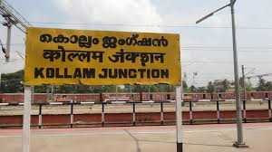

Kollam (erstwhile Quilon) is a southern district of Kerala, located 70 km north of the state’s capital Thiruvananthapuram. It is flanked by the Arabian sea on the west, Tamil Nadu on the east, Alapuzha and Pathanamthitta districts on the north and Thiruvananthapuram district on the south. Housing a population of over 2.6 million, Kollam is one of the more densely peopled districts of India. The head quarters of the district administration is centred at Kollam City, the district’s capital. Administratively, the district is composed of two revenue divisions viz. Kollam and Punalur with three taluks each under them
| Jatayu Earth's Center | |
|---|---|
|
Jatayu earth centre is located in a small village called Chadayamangalam in Kollam (Quilon) District is one among the most awaited viable tourism destinations in Kerala. This is the first cooperative work by the Tourism Department of Kerala and Mr. Rajiv Anchal (who is the mastermind and promoter) accompanied by private valuation holders to make the destination, which is an inimitable blend of all features of tourism including adventure, mythology, history, nature and beauty in the serenity. |
| Palaruvi Falls | |
|---|---|
| Palaruvi Waterfalls, which literally translates to ‘Stream of Milk’, comes down through rocks from a height of 300 feet. This has turned into a delightful picnic spot where one can enjoy a spectacular view uninterrupted. The rocky terrain one has to traverse before reaching it can be cumbersome but once these majestic waterfalls come into sight, any kind of fatigue disappears immediately. The cool water is frequented by those seeking a refreshing dip and it regularly attracts people in large numbers. |
| Sasthamkotta Lake | |
|---|---|
| Being called the 'Queen of Lakes' is no small distinction, but a visit to Sasthamkotta in Kollam district helps you understand the moniker. The largest freshwater lake in Kerala, it has always been a hotbed for tourist activity. Flanked by magnificent hills on three sides, this area is also home to one among Kerala’s most important pilgrimage sites, the ancient Sastha Temple. One can find friendly monkeys on its premises that are considered divine entities by the locals. Dedicated to both Lord Ganesha and Lord Ayyappa, the monkeys are believed to be the faithful entourage of the ruling deity, the Dharmasastha. People love coming and feeding the beautiful animals, along with soaking in the spiritual ambience of the entire place. |
| Neendakara Port | |
|---|---|
| The Neendakara is a famous fishing port, located 9 km north of Kollam district in Kerela. This major sea port is one of the biggest in the region, with the capacity to contain over 500 fishing boats at a time. The place is so beautiful that people from different parts of the state, country and even abroad come here for a divine holiday experience in the lap of mother nature. The Neendakara Port offers an excellent view of the surroundings, from where the visitors can even watch the delightful sight of Ashtamudi Lake, converging into the vast sea. |